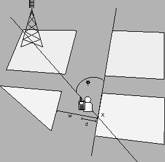

Siguiente: Ángulo de orientación de
Subir: Algoritmos y cálculos implementados
Anterior: Cálculo de alturas efectivas
Índice General
Cálculo del ángulo de orientación y ancho de la calle
Como se vio en el capítulo 5, hay algunos modelos de
propagación (COST231-WI, MOPEM, etc.) que consideran la orientación
y el ancho de las calles como unos de los tantos factores que
inciden en el análisis de predicción. Por tal motivo, se incluyó
dentro de la herramienta de software un algoritmo para
determinar el ángulo que forma la calle donde está ubicado el móvil
con la recta que une a éste con la radiobase, y a su vez el ancho de
dicha calle.
El algoritmo planteado requiere la capa de manzanas debido a que se
considera una calle al espacio entre dos manzanas adyacentes. Como
se vio en la sección 8.1.5, una manzana es
representada como una geometría (polígono) y esto permite utilizar
las operaciones geométricas disponibles en la biblioteca JTS.
Dada la ubicación del móvil, el primer paso consiste en establecer
algunas restricciones para aumentar la eficiencia del algoritmo en
lo que se refiere a tiempos de cálculo. Una de ellas es descartar
aquellas posiciones del móvil que se encuentren dentro de la
superficie de una manzana, teniendo en cuenta que el posterior
cálculo de atenuación en dichos puntos no agrega valor a la
predicción ya que únicamente se consideran ambientes outdoor. Para
ello, se determina si el móvil está contenido dentro de una
manzana o no; en el caso de estarlo, no se procede a realizar el
cálculo de la orientación y del ancho de la calle en dicho punto.
Otra de las hipótesis consiste en, dada la ubicación del móvil,
considerar únicamente las manzanas que se encuentren cercanas a
él, dado que si el mismo se halla muy lejos de la calle pierde
sentido tomar la misma como referencia para el cálculo de la
orientación y del ancho. Para obtener las manzanas más próximas al
móvil, se crea un círculo con centro en la ubicación del mismo y
radio fijo y se calcula la intersección entre la manzana y el
círculo. En todos los casos en que la intersección no sea nula, es
decir, que la manzana esté contenida en el área de interés, se
considera la respectiva manzana como ``cercana al móvil'', y luego
es considerada para el cálculo de la orientación y del ancho de la
calle.
Tomando como base las hipótesis anteriormente descritas, se
procede a buscar la cuadra que esté a una menor distancia del
móvil dentro de todas las que forman parte de las manzanas
cercanas a él. Para realizar esta medida el algoritmo recorre
todas las cuadras de las manzanas ``cercanas'' hasta quedarse con
la que diste en una menor medida de la ubicación del móvil. Si se
observa la figura 10.4, la menor distancia desde el
móvil a alguna de las manzanas cercanas a él está dada por
d.
Figura 10.4:
Orientación de la calle donde se encuentra el móvil
respecto a la radiobase
|

|
Subsecciones
Siguiente: Ángulo de orientación de
Subir: Algoritmos y cálculos implementados
Anterior: Cálculo de alturas efectivas
Índice General
SAPO